这一课有 20 个问题，但只有四种问法：谁做家务、你最喜欢谁、你觉得谁最怎样、谁给你的建议最好。真正的陷阱在别处 —— 前 9 题几乎都在问「你家谁做什么」，而默认你已经有自己的家庭。作为一个 25 岁的研究生，被问 Who takes care of your children? 时，硬编一个答案是最糟的处理方式。这一课要练的核心技能，是怎么把不符合自己情况的题重新框定。
课本 p.44–49
20 个问题 + 1 个例题
四种问法
01先把回答的骨架搭好
Who 类问题的答案永远是「一个人」，但只丢一个名字是不够的。三句话：点名 → 说他在做什么 → 给一句评价。
说细节 — 他具体做什么、多久一次She cooks every day except Sunday, and my dad does Sunday because it's his one day off.
给评价 — 一句态度，让回答有温度I should probably learn, but she's never let me near the kitchen.
情况不符时，用这个句式重新框定。
课本有 8 道题预设你已经有配偶和孩子。不硬编，改成「如果……」：
I don't have kids yet, but in my parents' house it was always my mum — so I imagine it'd be the same for me.
这样既回答了题目，又提供了信息，还顺带讲了你家的真实情况。这比 I don't know 或瞎编都强得多。
Depends how you define rich. / If you mean by money…
把模糊的题目变清楚，也给自己争取时间
2 给人选 + 理由
I'd say my mum, because she's never once complained.
理由要具体到行为，不要说「她很伟大」
3 承认是主观的
But that's just my family — I'm obviously biased.
显示你知道这是判断，不是事实
第 13、14、15 题要小心，它们会滑成「事实题」。Who is the richest person in the world? 听起来像有标准答案，但你答不出准确的人名，或者说错了，就变成答错事实。更稳的打法是把它当判断题处理：
I'd have to guess — one of the tech founders. But honestly, "richest" changes every month, so I'm not sure the question has a permanent answer.
——把自己不知道这件事，变成对题目本身的一句评论。
I don't have kids yet — but at home it was always my mum, so I'd guess it'd be the same.
② 假设句
If I did have children, I think we'd split it — I'm better at cooking than my partner, but worse at everything else.
③ 换个「家」的定义
If you count the flat I share with two other students, then it's me who does the dishes — I'm the only one who can't stand a dirty sink.
④ 老实说没人
Nobody, honestly. I live alone, and my diet is a disgrace.
第③种最值得练。它把「我没有家庭」变成了「我刚才重新定义了问题」，既回答了题，又显得思路灵活。
If you count… 这个开头可以用在任何预设不符的场合。
03课本例题：一段「满分」的崇敬表达
课本例题是 Who do you admire the most?，答案写的是父母。注意它的写法：没有一句形容词夸奖，全是具体事实 —— 放弃了什么、没读完书、重视什么、结果是什么。最后才用一句话总结。这是「表达崇敬」最有效的结构。
Example
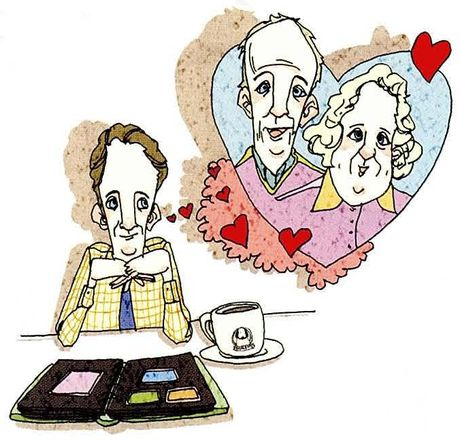
Who do you admire the most? /ədˈmaɪər/
What you seeA man sitting at a table with an open photo album and a mug, and a big heart-shaped bubble above him showing an elderly couple — his parents.
What it means你最敬佩谁。admire 是「敬佩」，比 respect 多一层「我向往成为那样的人」。
Say it like this"My parents. They sacrificed everything for me — they gave up their own dreams and their financial security. Neither of them got through school, because they were too poor, but they always emphasized how much a college education mattered. So my brothers and sisters and I ended up with a much better life than they had. I don't think anything is stronger than a parent's determination to raise their children well."
这段里有四个可以直接搬走的表达：sacrifice everything for sb（为某人牺牲一切）、
give up their own dreams（放弃自己的梦想）、
emphasize the importance of sth（强调某事的重要性）、
a parent's determination to raise their children well（父母把子女养好的决心）。
最后一个把抽象的情绪变成了一个名词短语，非常漂亮。
千万不要一开口就说 My mother is a great woman.
空洞的形容词在英语里几乎没有说服力。对比一下课本那句 Neither of them got through school —— 一个事实就把「牺牲」两个字说完了，读者自己会得出「伟大」这个结论。
04二十个问题：怎么答出层次
每张卡三段：What you see 照着图描述，What it means 说清这题到底在问什么，Say it like this 给三档答案：① 一句短答 / ② 加细节 / ③ 加一个具体例子或重新框定。第三档请尽量换成你自己的真事。
01
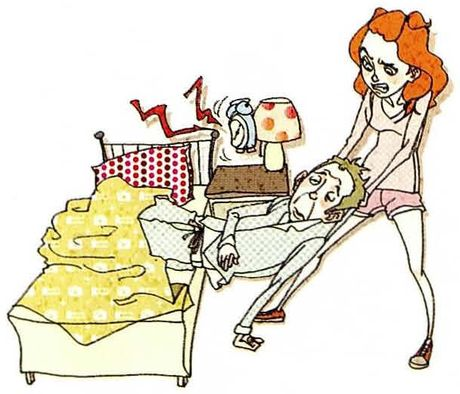
Who wakes you up in the morning?
What you seeA woman yanking the duvet off a man who is still lying in bed, with an alarm clock ringing on the bedside table. She's not being gentle about it.
What it means早上谁叫你起床。注意 wake sb up，up 不能丢。
Say it like this①My alarm, and it barely works. ②Just my phone — three alarms, five minutes apart. I'm capable of sleeping through all three. ③Nobody, which is the problem. At home my mum used to shout up the stairs and that always worked, because you can't ignore a person the way you can ignore a phone. Now I live alone and I've slept through a 9am meeting twice this semester.
02
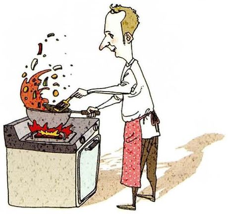
Who cooks in your home?
What you seeA man standing at the stove, spatula in the air, while flames and bits of food leap out of the pan. Enthusiastic, not skilled.
What it means家里谁做饭。cook 这里是不及物动词「做饭」，不是「煮」。
Say it like this①My dad, actually — which surprises people. ②My dad does the everyday cooking and my mum does the complicated dishes at New Year. That's the division in my family. ③My father, and he's genuinely good at it — he retired early and cooking became his thing. It's interesting because his own father never went near a kitchen. So in one generation it completely flipped, and I think it's just because my mum worked longer hours.
03
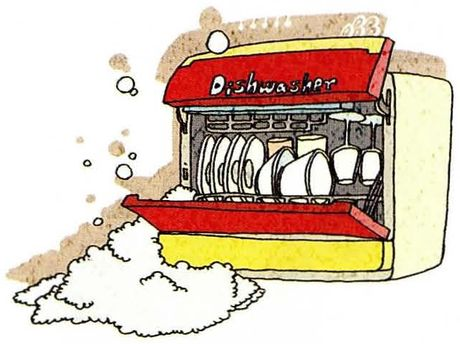
Who does the dishes at home?
What you seeA dishwasher with the door pulled down, plates stacked inside, steam and bubbles spilling out. Maybe the answer is "the machine".
What it means家里谁洗碗。固定搭配是 do the dishes，不用 wash。
Say it like this①Whoever cooked doesn't have to — that's the rule. ②We split it: whoever cooks, the other one washes up. It sounds fair until you realise my brother only ever makes instant noodles. ③In my flat it's me, and it's not generosity — I can't work in a kitchen with a dirty sink behind me. My flatmates worked that out within a month and now they just leave things there. I've been outmanoeuvred by my own standards.
04
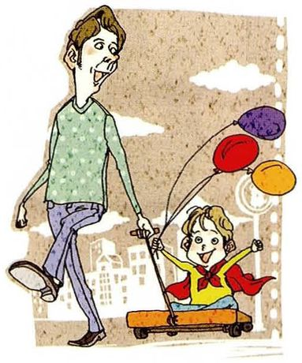
Who takes care of your children?
What you seeA man walking along holding the hand of a small child on a scooter, with three balloons on strings. Everyday childcare.
What it means谁照顾你的孩子。这题默认你已经有孩子 —— 没有的话按第 02 节 C 的方法处理。
Say it like this①I don't have children yet. ②No kids yet — I'm still the one being looked after, arguably. But in my parents' generation it was almost always the mother. ③I don't have children, so I'll answer for my sister instead. She works full time and my mother looks after the baby four days a week. It's the standard arrangement in my city, and it quietly depends on a grandmother being available — which is a lot of unpaid labour nobody counts.
05
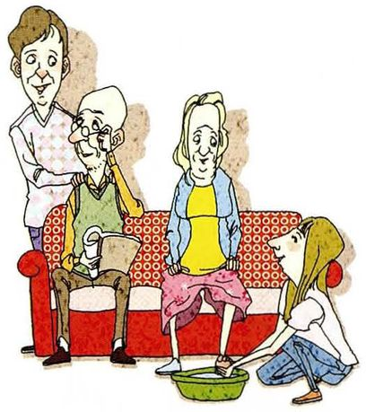
Who takes care of your parents?
What you seeAn elderly couple sitting on a red sofa, a young man standing behind them, and a woman kneeling on the floor washing their feet in a basin. Care as a physical act.
What it means谁照顾你的父母。注意时态：如果你父母还健康，就说 Nobody needs to yet。
Say it like this①They look after themselves, thankfully. ②Nobody has to yet — they're both in their fifties and still working. But my sister lives closer, so realistically it'll fall to her. ③They don't need care yet, but we've already had the awkward conversation. My sister's in the same city and I'm eight hours away, so the practical answer is her. I send money and call every week, which everybody politely agrees is not the same thing. It's the thing I feel most guilty about, honestly.
06
Who makes the most money in your household?
What you seeA woman at a desk with stacks of banknotes heaped around her computer, and below her a man sitting with a laptop. The hierarchy is very clear.
What it means家里谁挣得最多。注意 make money 是「挣钱」，earn 更正式。
Say it like this①My mother, comfortably. ②My mother earns more than my father, and has for about fifteen years. Nobody in the family thinks that's strange, which I think is worth mentioning. ③In my parents' house it's my mother — she's a doctor and my father teaches, so the gap is wide. What's interesting is that he's the one who's always managed the money. So the person who earns it and the person who decides what happens to it are two different people, and somehow that works fine.
07
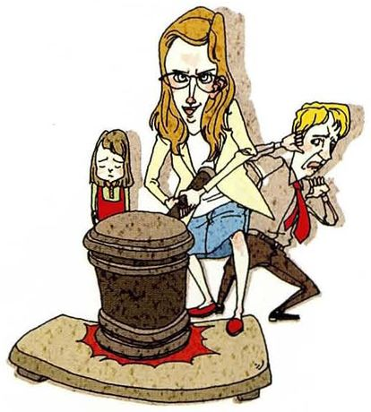
Who makes the major decisions in your family?
What you seeA woman standing with a judge's gavel raised, while two other family members sit below her. She's the one who rules.
What it means家里大事谁说了算。注意 make a decision，不用 do。
Say it like this①My mother, and everyone knows it. ②My mother makes the decisions and my father pretends he did. It's a very stable arrangement. ③It depends on the decision, which sounds like a dodge but isn't. Anything about money or property, my father decides. Anything about people — who's coming for New Year, whether someone's being unreasonable — my mother decides. They've been doing this for thirty years without ever discussing it.
08
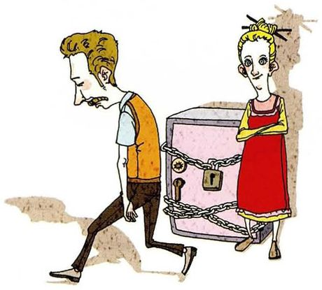
Who is in charge of finances in your family?
What you seeA woman standing beside an enormous iron chest wrapped in chains with a padlock, while a man walks past looking at it. She holds the key.
What it means家里谁管钱。注意 finances 是复数，be in charge of 是固定搭配。
Say it like this①My mother, definitely. ②My mother handles everything financial. My father has no idea what their savings are, and seems happy about it. ③My mother, in the sense that she knows where everything is. My father earns and hands it over. He once tried to take over and lasted about three weeks — apparently it's much harder than it looks, and there was a conversation afterwards that nobody has ever described to me in detail.
09
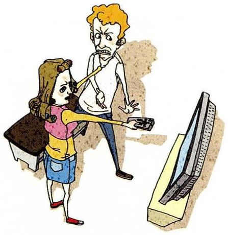
Who decides which channel to watch on TV?
What you seeA woman holding a remote control up out of reach while a man next to her looks exasperated. A domestic standoff over the TV.
What it means家里谁决定看哪个台。这一题在英语里其实有点过时了 —— 现在很少传统看电视。
Say it like this①Nobody watches TV in our house anymore. ②Whoever holds the remote, honestly. But we barely use the TV now — everyone watches on their own phone. ③This question feels like it's from another decade — my parents still have that fight, but at my age everyone streams on a phone with headphones on. Which means the modern answer is that nobody compromises and nobody talks about it.
10
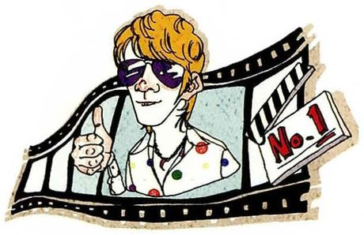
Who is your favorite movie star?
What you seeA movie star in sunglasses inside a strip of film, giving a thumbs up with one hand. Movie-star pose, movie-star film.
What it means你最喜欢哪个影星。注意 movie star 是美式，英式说 film star。
Say it like this①Tony Leung, without question. ②Tony Leung. He can hold a whole scene without saying anything, and I find that more impressive than anything loud. ③I'd say Tony Leung, though "movie star" feels like the wrong frame for him — he's not really a star, he's an actor. What I like is that you can watch him thinking. In In the Mood for Love most of the film is two people not saying things, and he does it with his eyes.
11
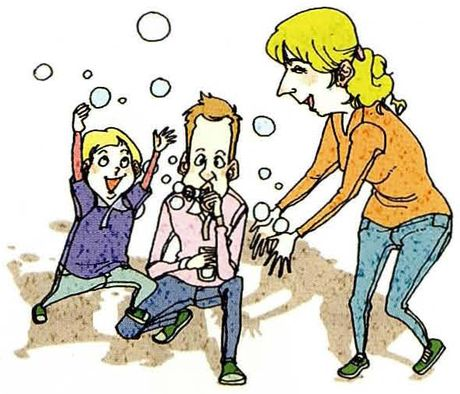
Who do you think is the happiest person in your family?
What you seeA mother on the floor with two small children climbing on her, bubble liquid and a wand in her hands, all three laughing. Chaos, but happy chaos.
What it means你觉得家里谁最幸福。the happiest —— 最高级前面必须有 the。
Say it like this①My little nephew, I'd say. ②My nephew. He's four, nothing bad has happened to him yet, and everyone in the family is competing to make him laugh. ③My grandmother. Everyone else in the family is worried about something — money, work, whether I'll finish my degree. She's eighty-six and has decided that none of it is her problem anymore, and honestly she seems freer than anyone I know. I'm slightly jealous.
12
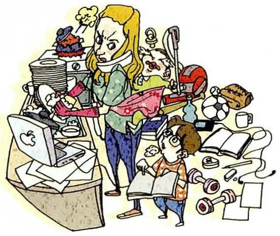
Who do you think is the busiest person in your family?
What you seeA woman at a desk buried in papers, a laptop open, a phone to her ear, and a small child pulling at her. Everything at once.
What it means你觉得家里谁最忙。busy 指「事情多」，不是「忙碌地跑来跑去」。
Say it like this①My mother, and it's not close. ②My mother. She works, looks after my grandparents, and still somehow cooks on Sundays. I'm busy with one thing and I complain more than she does. ③My mother, but I'd want to distinguish between busy and tired. She's busy in a way that never stops — there's no evening where it's finished. My work is intense but it does switch off at some point, which I've started to think is the more important difference.
13
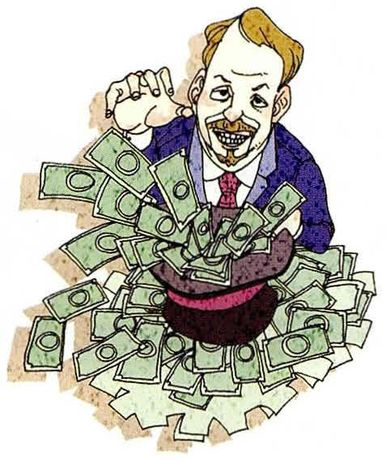
Who do you think is the richest person in the world?
What you seeA man in a suit sitting up to his waist in a mountain of banknotes, looking very pleased with himself. Wealth cartoonishly piled up.
What it means你觉得世界上最有钱的人是谁。这题名字会变，别冒险说一个具体人名 —— 见第 02 节的提醒。
Say it like this①One of the tech founders — I'd have to look it up. ②Probably one of the tech billionaires, but it changes every month, so I don't think I could name the right one on any given day. ③I genuinely don't know, and I'm suspicious of anyone who answers this quickly. The list changes constantly, and half those fortunes are shares rather than money — the number moves when the market does. So the honest answer is that the question doesn't have a permanent answer, which is probably the interesting thing about it.
14
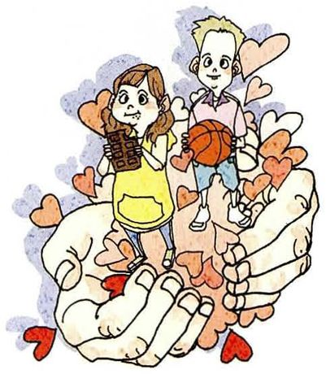
Who do you think is the most important person in the world?
What you seeTwo small children standing in an enormous open hand, with hearts floating around. Protection, care, the value of a life.
What it means你觉得世界上最重要的人是谁。这是纯观点题，也是最考验思路的一题。
Say it like this①That's impossible to answer — important to whom? ②I don't think the question has one answer. Importance depends entirely on who's asking and what they need, so a parent would name their child. ③I'd push back on the idea that there's a ranking at all. The people who actually change the world are almost never the ones we'd name — they're the ones teaching eight-year-olds to read. If I have to answer, I'd say the most important person is whoever's raising the next generation, and there are billions of them, which is exactly why the question doesn't work.
15
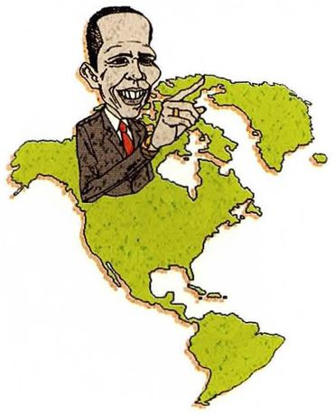
Who do you think is the most influential person in the world?
What you seeA man in a dark suit standing on top of a green map of the Americas, one finger raised. He's figured literally larger than the continent.
What it means你觉得世界上最有影响力的人是谁。注意 influential 是「有影响力的」，不是「有名的」。
Say it like this①Depends on the kind of influence. ②Politically, a few heads of state. Culturally, probably someone on TikTok nobody over thirty has heard of. Those are completely different kinds of power. ③I'd separate political influence from cultural influence, because they work differently. A president changes policy and it can be undone in four years. Whoever designs how a billion people get their news changes something much harder to undo, and we usually can't name them. So the most influential person is probably an engineer nobody's heard of.
16
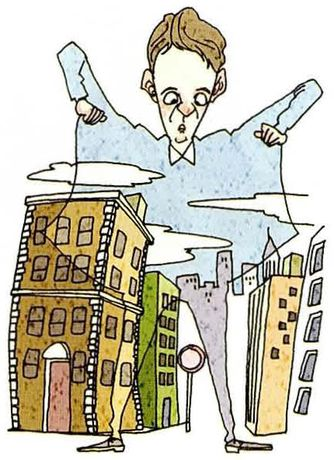
Who do you think is the most honest person?
What you seeA man drawn enormous, towering over little buildings and streets. Honesty as something solid enough to hold up a city.
What it means你觉得谁最诚实。这题需要你定义「诚实」—— 是不说谎，还是主动说真话？
Say it like this①My grandfather. He's incapable of softening anything. ②My grandfather. He'll tell you the food is bad while he's still chewing it, and somehow nobody takes offence. ③I'd want to separate two things: people who don't lie, and people who volunteer the truth. My grandfather is the second kind and it's exhausting but valuable — he's the only person in the family whose opinion I trust completely, because he's never once told me what I wanted to hear.
17
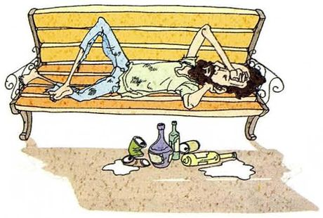
Who do you think is the most miserable person?
What you seeA man sprawled face-down on a park bench, one arm hanging down, with bottles and paper litter on the ground below him. He's given up for the day.
What it means你觉得谁最惨。miserable 是「痛苦不幸的」，重音在第一音节 /ˈmɪzrəbl/，很多人读错。
Say it like this①Hard to pick one — that's not really answerable. ②I don't like this question, honestly. Ranking other people's suffering isn't something I'd want to do. ③I'd rather not name anyone, and I'd say why: it's easy to answer with a stranger on a bench, and that's exactly the problem. It turns somebody's real life into an example for a conversation. If I have to answer, the most miserable person I actually know about is probably someone who has everything and can't feel any of it — which is a different kind of poor.
18
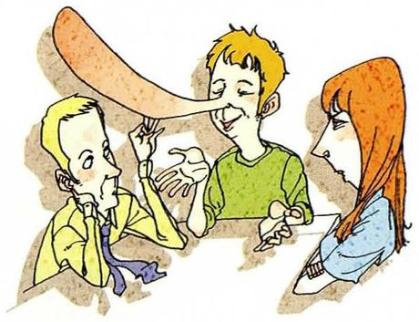
Who do you think tells lies most often?
What you seeA man sitting at a table with two others, and his nose has grown enormously long, curving out past them. Pinocchio, in a meeting.
What it means你觉得谁最常说谎。注意 tell a lie，不用 say。
Say it like this①Everyone, a bit. I'm not going to name anyone. ②I don't think it's a type of person — it's a situation. People lie when the truth is expensive. ③I'd say the answer is less about people and more about incentives. Someone selling something will shade the truth; someone with nothing to gain usually won't. So the most frequent liars aren't villains, they're people whose job rewards it. I'd rather answer that way than point at a cousin I don't like.
19
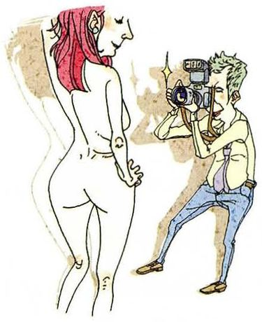
Who has the best job in the world?
What you seeA photographer crouching down, camera raised, photographing a model on a small set. Being paid to look at something beautiful.
What it means谁有世界上最好的工作。这题没有「正确答案」，只有「你的标准」 —— 所以要先说标准。
Say it like this①Whoever gets paid to do what they'd do anyway. ②I'd say a wildlife photographer — outside, no meetings, and every day is different. Though I suspect the photos take about two percent of the time. ③It depends what you count as good. If it's freedom, then anyone self-employed. If it's meaning, then something like a surgeon. If it's money for effort, then something I can't guess at. I'd pick a job where you can see the result of your work at the end of the day — which rules out most of what I do, now I think about it.
20
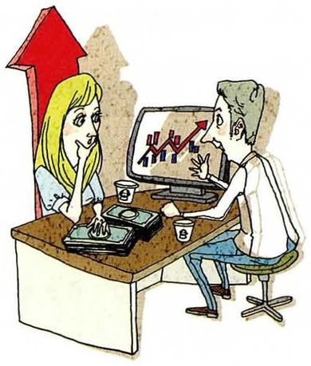
Who gives you the best advice?
What you seeA man at a desk with a computer showing a line going up and up, explaining something to a woman beside him, with a big red arrow rising above them. Confident advice.
What it means谁给你的建议最好。注意 advice 不可数 —— 说 a piece of advice，不是 an advice。
Say it like this①My supervisor, actually. ②My supervisor, and the reason is that he almost never tells me what to do. He asks a question and then I work out what I think. ③My supervisor gives the best advice and my friends give the most honest advice, and those are different things. He'll ask me what I want to do and then point out the part of my reasoning that's wishful. My friends will just say "don't do it". Between the two I've stopped making most of the mistakes I used to make.
My grandmother, on my mother's side. She was widowed at thirty-nine with four children and no income, and she kept all four in school. I don't have a dramatic version of the story — she never talked about it as heroic, she talked about it as something that had to be done. What I admire is that she never once presented herself as a victim of it.
照课本的三段结构来：人 → 具体事实（年龄、四个孩子、没有收入）→ 一句评价。最后那句 never presented herself as a victim 把答案拉高了一个层次。
In your family, is the division of housework equal?
No, and nobody in my family would claim it is. My mother does most of it and always has. What's changed is my father — he retired and took over the cooking, which is a real shift. But the invisible stuff, remembering whose birthday it is, knowing what's running out, that's still all her. I read somewhere that the mental load is the part that never gets counted, and it's true in my house.
the mental load（精神负担）这个概念在英语讨论里非常常见，用出来会显得你理解这个问题。而且它把「谁做饭」这个表面问题讲深了一层。
Do you think women should do most of the housework?
No. And I'd say the answer was never really about capability — it's about who has the time. My mother did most of the housework because my father worked longer hours, not because she was better at it. When that changed, the division changed too. So the question I'd ask is about hours, not gender.
把「该不该」的问题重新框定成「谁有时间」的事实问题，是很成熟的处理。这个技巧在 Part IV 会遇到很多次。
If you have children, who will look after them?
We've talked about this, actually — my partner and I. Neither of us wants to stop working, so the honest answer is that we'd need help, and help in this country usually means a grandmother. That's a real constraint, and it's not a plan so much as a hope that one of our mothers is willing. I'd rather say that plainly than pretend we've solved it.
承认「这还算不上计划」，比给一个漂亮的假答案更有说服力。老师会感受到你在认真想，而不是在应付题目。
Which question in this lesson was hardest for you?
The one about the most miserable person. I found I didn't want to answer it — it felt like I'd be using someone's life as an example. And then I noticed that in Chinese I'd probably just have answered it quickly without thinking. So the difficulty was useful: it told me something about how I answer in each language.
Who do you think is the most honest person you know?
A lab mate of mine. She's honest in a slightly inconvenient way — she'll tell me an idea is bad while I'm still excited about it. It took me a year to stop being annoyed and start being grateful, because she's the only person whose "it's good" I actually believe. Everyone else says that.
honest in a slightly inconvenient way 是很生动的描述。It took me a year to stop being annoyed and start being grateful 这种带时间跨度的叙述，比任何形容词都更可信。
✗My mother cook in my home. ✓My mother cooks in my home. / My parents cook.
答案是一个人时，动词必须加 s。这一课 20 题里有 12 题的答案是一个人名，所以这个错误会反复出现。
✗My mother gives me many good advices. ✓My mother gives me a lot of good advice. / …some good advice.
advice 是不可数名词，永远不能加 s。要数就说 a piece of advice。
✗Who is in charge of the finance in your family? ✓Who is in charge of the finances in your family?
表示「家里的财务」用复数 finances。finance 单数指「金融」这个领域。
✗Who do you think is the most richest person? ✓Who do you think is the richest person?
most 和 -est 不能同时用。这是最高级最经典的重复错误。
✗My mother does the dish at home. ✓My mother does the dishes at home.
固定搭配是 do the dishes，永远复数。同理 do the washing-up（英式）。
✗I don't have children, I don't know. ✓I don't have children yet — but in my parents' house it was my mum, so I'd guess it'd be her.
「不知道」是最浪费机会的答法。用「说明情况 + 转向你知道的」这个结构，同样的信息量，但听起来完全不一样。
✗My parents gives me the best advice. ✓My parents give me the best advice.
主语是复数就用动词原形。这个和第一条是同一个知识点，出现在相反的方向上。
✗He is in the charge of the money. ✓He is in charge of the money. / He's responsible for the money.
in charge of 不加 the。加了 the 意思会变成「被指控」，完全是另一回事。
08五十分钟怎么用
这一课的内容离生活很近，所以准备的重点不是背词，而是准备好讲你家的真事。老师一定会追问。
课前 10 分钟：先看第 02 节 C 的四种处理方式第 4–8 题你大概率答不了自己的情况，四种说法挑一种练熟，遇到就不会卡。